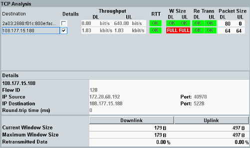
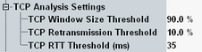

The overview shows a table with the threshold check results per connection. And it shows additional properties for one connection at a time.

Open the configuration dialog box via the hotkey "Config".
The relevant settings are contained in the node "TCP Analysis Settings".

- "Window Size":
Current TCP window size as percentage of the negotiated maximum window size.
The maximum window size defines how many bytes can be transmitted without waiting for an acknowledgment. Or in other words: how many unacknowledged bytes can be on the way simultaneously.
If the current window size reaches the maximum window size, no more packets are sent until acknowledgments are received. So a too small maximum window size decreases the throughput. - "Retransmission":
Retransmissions as percentage of all transmissions. Retransmissions decrease the throughput. - "RTT":
Round-trip time, for TCP packet to the DUT plus acknowledgment packet from the DUT
The result overview in the upper part of the tab lists all connections and indicates whether and which thresholds are exceeded.
If a threshold is exceeded, a NOK or FULL is displayed. Otherwise, an OK is displayed.
- "Destination": Address of the destination of the connection
- "Details": Selects the connection, for which detailed information is displayed in the lower part and in the TCP graphs.
- "Throughput": DL and UL throughput
- "RTT": Round-trip time threshold check result
- "W Size": Window size threshold check result for the DL and UL
- "Re Trans": Retransmissions threshold check result for the DL and UL
- "Packet Size": DL and UL layer 3 packet size in bytes
The "Details" area in the lower part of the tab displays additional properties for the connection selected in the upper part, column "Details".
- "Flow ID": IDs of the flows used by the connection
The same IDs are displayed in other views, for example the "IP Connectivity" view and the "Flow Throughput and Trigger" view. So you can use the flow IDs to correlate the information in different views. - "IP Source" / "IP Destination": Address and port of the source that has initiated the connection and of the destination addressed by the source
- "Round-trip time", "Current Window Size", "Retransmitted Data": Measured values, used for the threshold checks
- "Maximum Window Size": Maximum window size negotiated for the connection
Shows diagrams with measured results vs. time, see "TCP Analysis Graphs".